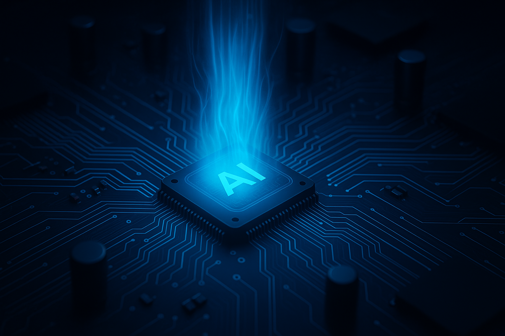
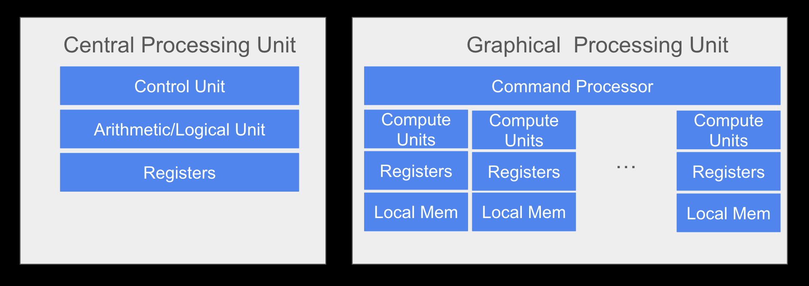
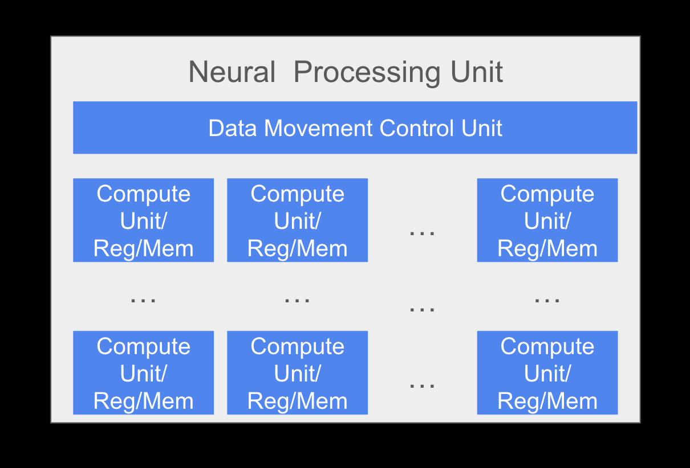

Beyond CPUs and GPUs (The Path to Efficient AI, Part 1)

Introduction
CPUs and GPUs have been at the center of the AI boom, and the capabilities of AI models have grown exponentially while running on these traditional processors. With all of the impressive LLMs and generative AI models available today, it is easy to forget we are still in the early days of AI. Future AI models will need significantly more processing power.
We have the deepest respect for the engineers that have stretched CPU and GPU hardware and software to support AI workloads. But, CPU and GPU hardware architectures were not designed for AI and we are increasingly hitting limits in efficiency and power consumption. Inference costs are inflated by running on hardware that was architected for other applications. A new kind of hardware architecture is needed to efficiently run AI workloads.
In this series of three posts we will lay out a path to efficient AI. In this post we will cover the custom hardware needed to efficiently run AI. In the second post we will discuss the software gap and the struggle to use custom hardware efficiently, and finally in the third post, we will explain how an open-source software community is the key to bridging the software gap.
Why Traditional Processors Cannot Efficiently Run AI Workloads
The power demand of AI inference is growing exponentially. Entire power plants are being planned to feed AI datacenters. In the headlong rush to build, train and deploy the latest models, the cost was a lesser concern. Over the past few years, engineering teams focused far more on building the latest LLM than worrying about how to reduce the cost and improve efficiency of older models. Now, many models are maturing and it is time to consider how much we are spending on inference.
Why not simply enhance traditional processors? Why do AI inference workloads need new hardware? In one sense, traditional processors are being enhanced. Custom AI inference hardware is being added near to the traditional processors to assist in tensor processing. New hardware should not be confused with changing the fundamental CPU or GPU architectures. The hardware added to traditional processors has the same characteristics and challenges as all AI HW accelerators.
A few simplified diagrams of CPU and GPU hardware architectures are shown below. Note that GPUs have many more processing units controlled by one thread control unit.

CPUs are excellent for general-purpose computing and control. Decades of innovation in CPUs has resulted in elaborate multi-level caches and control prediction logic. The same hardware that makes CPUs great for general purpose applications gets in the way of AI workloads. In a CPU, there is too much specialized logic for control and not enough logic for processing multiplications. A CPU is still an integral part of managing AI workloads, by directing and planning the work instead of doing all the work itself.
GPUs are relatively newer than CPUs, having been invented only about 30 years ago. They are better at matrix operations than CPUs have been repurposed for early AI work. In a GPU, a single control unit manages many processing units. One of the main drawbacks for AI workloads is that GPUs are still general purpose graphics processors. They support a variety of datatypes, including floating-point, complex and integer types. GPUs have massive data pipes to support high-res graphics, and now model training. The variety of hardware in a GPU helps by providing one platform for all training and inference, but inference workloads need less accuracy and IO bandwidth. Much of the power of a GPU is not needed and left unused during inference.
Diving into Specialized AI Hardware
The alternative is a dedicated AI hardware accelerator, or Neural Processing Unit (NPU). NPUs are designed either for edge inference, datacenter inference, or for training. Some NPUs can be scaled and packaged for multiple use cases. Edge inference NPUs need to be available in a datacenter so the NPU’s customers can test use cases before deploying at the edge, so all NPUs are likely to be found in some form in a datacenter. In this post, we focus on inference to show how NPUs are different from traditional processors. The hardware tradeoffs for training are different, but the implications for the software and ecosystem are the same.
What makes an NPU more efficient for AI inference? Compared to GPUs, NPUs have an even larger ratio of compute power to control. AI workloads are extremely parallelizable and regular. In many cases, no control is needed other than sending the right tensors and instructions to the processing units.

NPUs are a new class of hardware, with more variation than traditional processors, but many fundamental elements of the hardware architecture are the same across NPUs. Data needs to be broken into pieces and flow rapidly and efficiently into and out of massively parallel processing units. When possible, data needs to be kept near the processing unit to avoid costly data transfers. Processing units need to use smaller and more efficient data types.
The difference from device to device tends to be more about the scale of the hardware elements and how data is stored. The system memory could be DDR or HBM, with SRAM or caches to store data tiles. The number of layers of memory also varies. Some architectures pump data directly from memory into the processing units, while others might have two or more layers of memory to manage partial terms and intermediate tensors.
The width and number of the pipes between the memory layers also vary. A small edge device might support less than 100GB/s to connect with DDR, while a big datacenter device might have a total bandwidth of more than 100TB/s to HBM. The number of channels, bits per channel and the addressability into elements can vary even inside a device as data moves up and down the memory hierarchy.
At the heart of every NPU is an array of processing units. The exact math operation and size of the tensor inputs and outputs for the processing unit can also vary, although they are essentially doing matrix multiplication operations.
Inside the processing units, a variety of floating point and integer datatypes might be natively supported. Machine learning is already inaccurate by nature and models often have some ability to self-correct for mistakes. Model inference can often be run at a lower precision to improve performance with minimal impact on accuracy.
Every decision in the hardware is a tradeoff. For example, hardware could be more efficient for larger tensor sizes or be more efficient for smaller tensor sizes. Scaling up the size of compute units leads to waste because tensors need to be padded until they evenly divide into the transfer sizes and processing units. Scaling compute units down requires more iterations for large tensors, and might require retransmitting data if local memory does not have enough space to store all the data to compute an output tile. Some models, like the largest LLMs, need multiple devices interconnected with special hardware to avoid CPUs getting too involved in data movement.
Other tradeoffs are between more accuracy and higher power vs. less accuracy that requires less power. ML models have a wide range of accuracy requirements and operation types. Many models use smaller datatypes for computation, or even a mix of datatypes inside an operation, for example 16-bit floating-point data and four-bit integer weights. The optimal hardware for any model depends on the model properties.
Implications to the AI Ecosystem
NPU hardware that matches the datatype and data movement requirements of a model will be far more efficient than any CPU or GPU, but the capabilities of NPU hardware depends on better software. Two software hurdles stand in the way of broad adoption of NPUs. First, the NPU compilers and runtimes need to be more efficient than CPU or GPU. Compilers are complex and teams will continue to leverage existing open-source projects to keep up with the latest innovations. Compiler development will not be able to keep up with rapidly evolving model architectures, so an option for kernel-based optimization will be an essential part of any successful compiler methodology.
Second, AI software needs to provide compatibility across devices. There are at least 50 companies today building custom inference hardware. Open-source communities need to provide a base level of compatibility across devices, including between NPUs and traditional processors, and between training and inference. Without compatibility, companies will be unwilling to risk switching from their current GPU or CPU solution.
In the coming years, improvements in NPU hardware will be impressive, but the improvements in models and software will be far more impactful. Early AI models have been optimized to run as efficiently as possible on traditional processors, and are not optimized for NPUs. As the NPU hardware and software becomes more accessible, we expect ML models optimized for NPUs to be hundreds of times more efficient than models today.
Conclusion
The promise of more efficient AI hardware depends on an advanced open-source software stack. New NPU hardware is incredible, and well suited to AI, but getting AI models to run on a diverse range of hardware requires software. A software gap has emerged that threatens to consume even the largest AI hardware companies.
In the next post we will dive into why teams struggle to build software for new AI hardware and why efficiency alone is not enough. Learn more about Kernelize’s vision for an open-source NPU ecosystem around Triton at kernelize.ai.
— Simon & Bryan